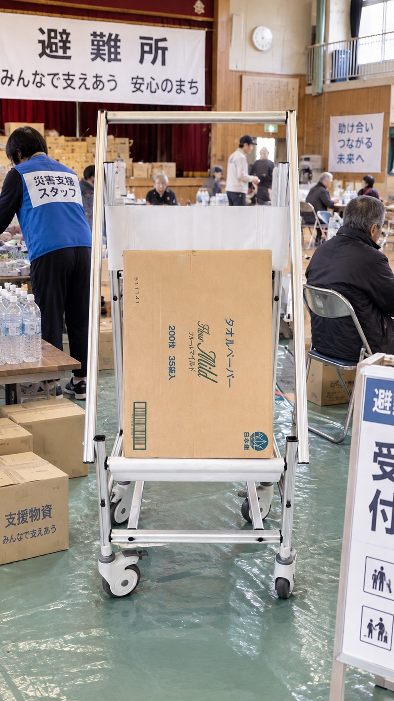

オフィス家具・文具販売
働き方と空間に合う家具・用品をご提案します
いつもあなたのオフィスの隣に
私たちはオフィス家具・文具の販売から始まり
お客様の課題に寄り添い 清掃 引越し 内装工事へと様々なノウハウを蓄積し
常にお客様の期待にお応えできるよう進化してきました
その中でもお客様が気持ちよく働ける商品とサービスを提供し
お客様の喜び 感動 笑顔を創造する姿勢は50年以上変わりません
Make work
feel better
私たちはお客様が気持ちよく仕事ができるための商品とサービスを提供し続けることで株式会社ユニオン 全社活動理念
お客様の喜び・感動・笑顔を創造します
日々使う用品から空間づくり 移転 清掃 そして情報発信まで
必要なサービスをつなぎ お客様の働く環境を一緒につくります
働き方と空間に合う家具・用品をご提案します
気持ちよく働ける環境を日々の管理から支えます
移転計画から搬出・搬入まで業務への影響を抑えて進めます
働きやすさと企業らしさを形にする空間をご提案します
日常の情報発信から安全・防災の備えまで運用を含めて支えます
 デジタルサイネージサポートサイン活用イメージ
デジタルサイネージサポートサイン活用イメージ1974年から働く環境を支えてきたユニオンは
これからの仕事と暮らしに「安全」という価値を届けます
安全をあなたの日常の景色にデジタルサイネージサポートサインを見る ↗
広島のさまざまな法人・施設との取引を通じて
現場ごとに異なる仕事環境の課題に向き合ってきました
広島県庁 / 県立高等学校 / 市立中学校 / 市内幼稚園・保育園 ほか
県立二葉の里病院 / 吉田総合病院 / 日本放送協会 ほか
三菱重工業関連会社 / 中電関連会社 / 戸田工業 / 中国塗料 / 生協ひろしま ほか
※掲載名称はお取引先の一部です


いつもあなたのオフィスの隣に
まずは今お困りのことをお聞かせください
防災と情報発信を考える方へ
導入前に知りたい選び方・費用・運用のポイントを、施設の用途に合わせてご紹介します。